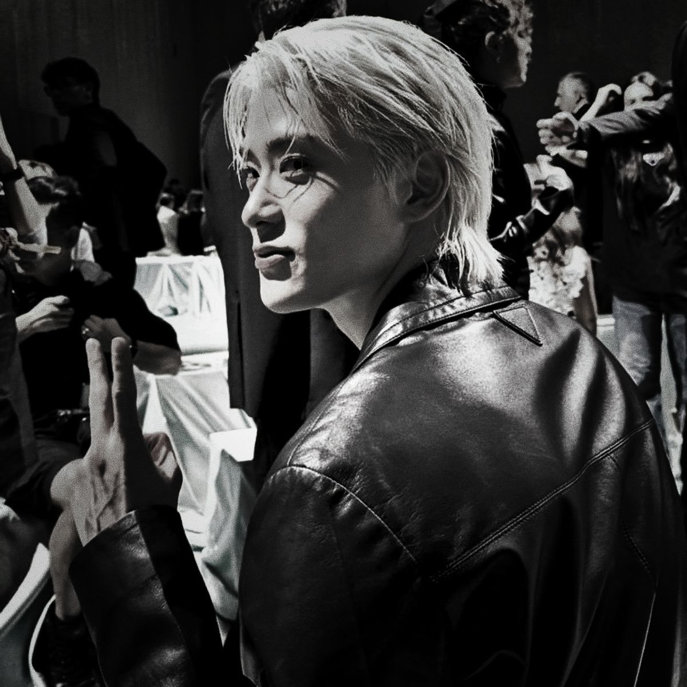
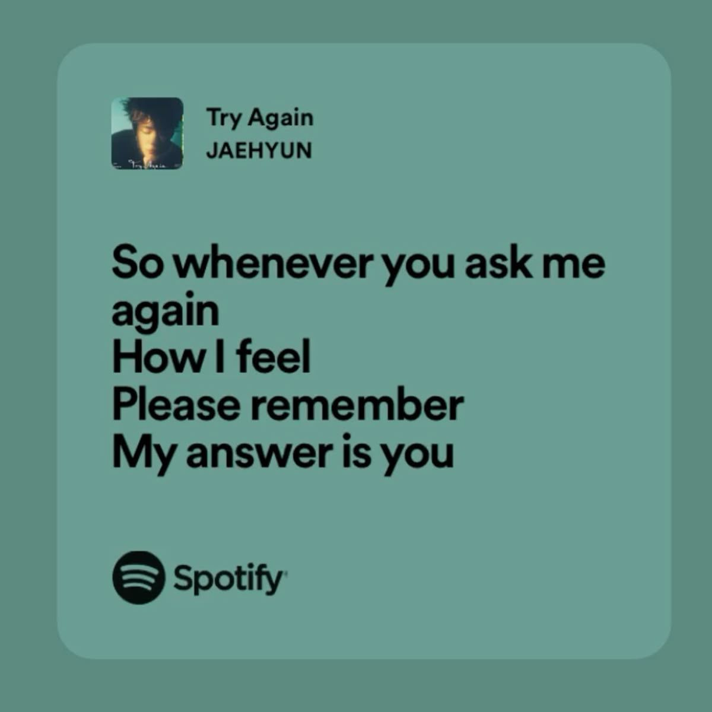
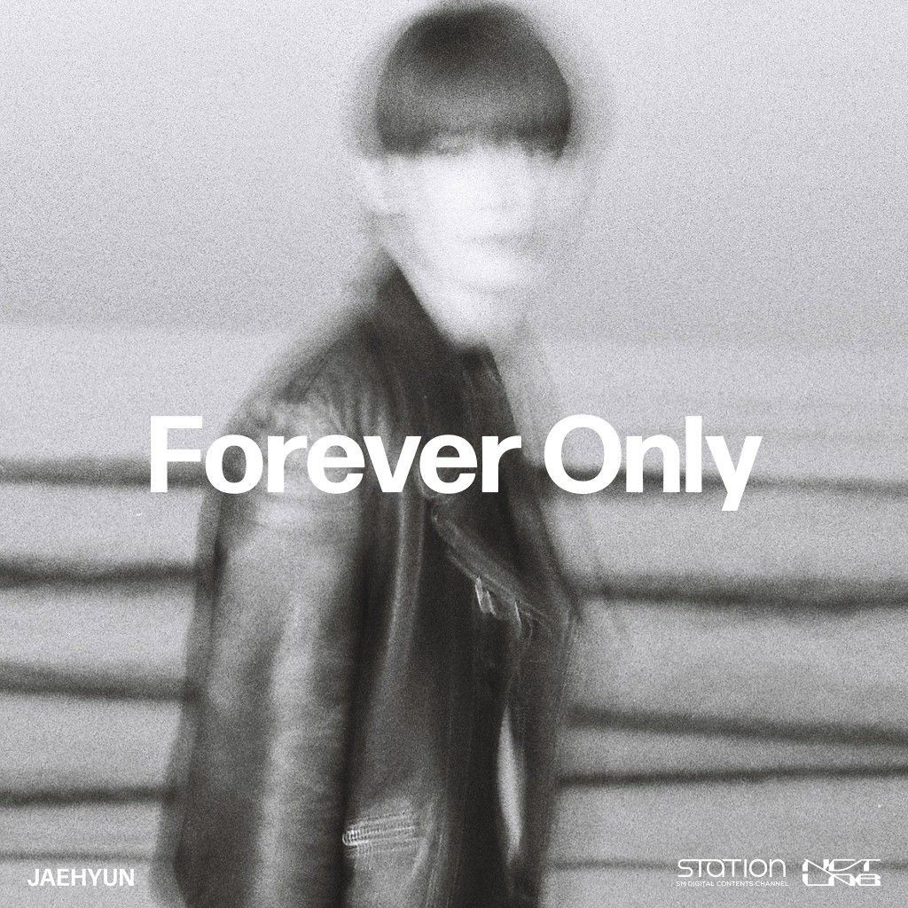
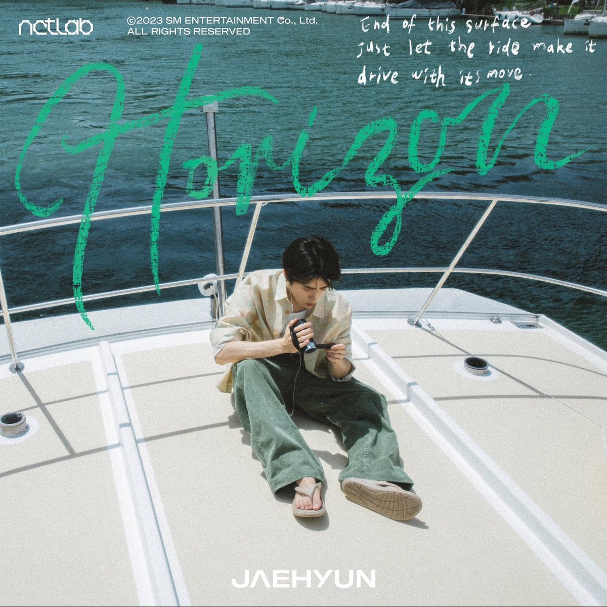
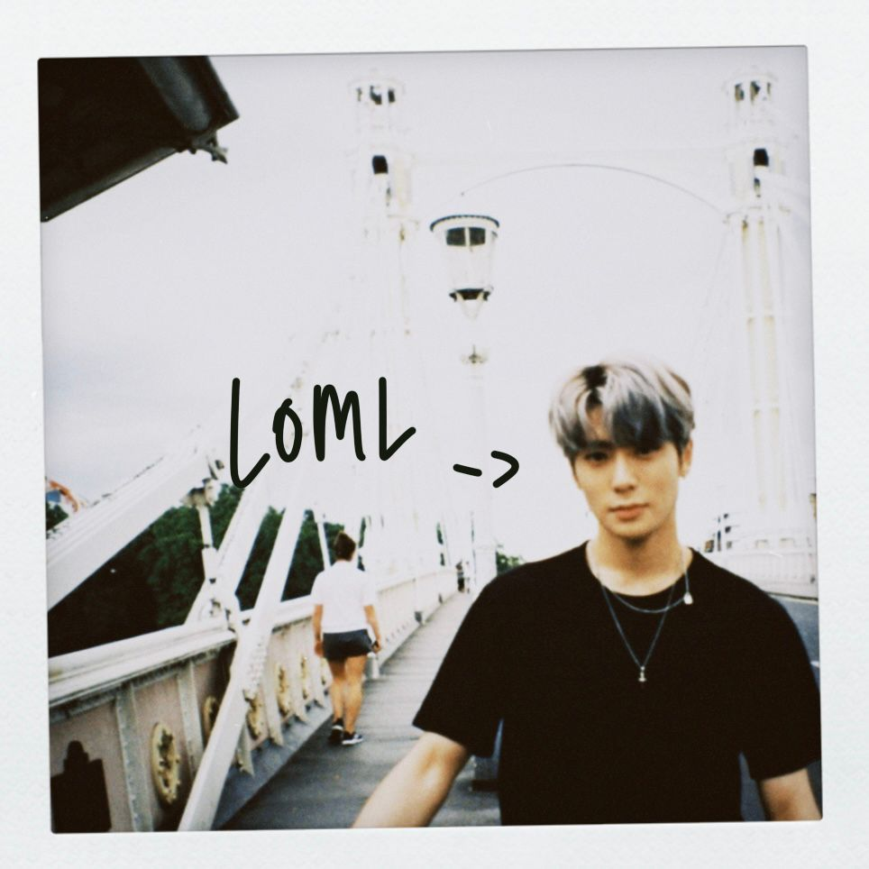
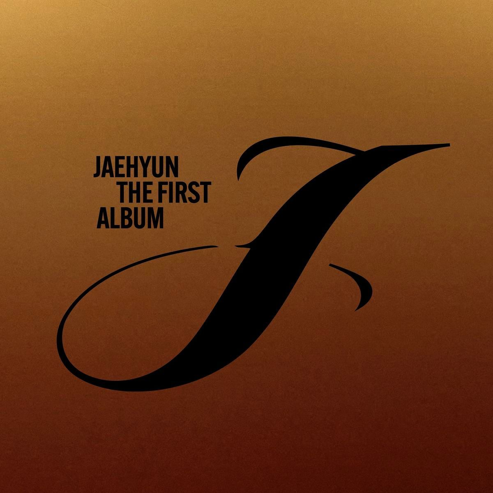
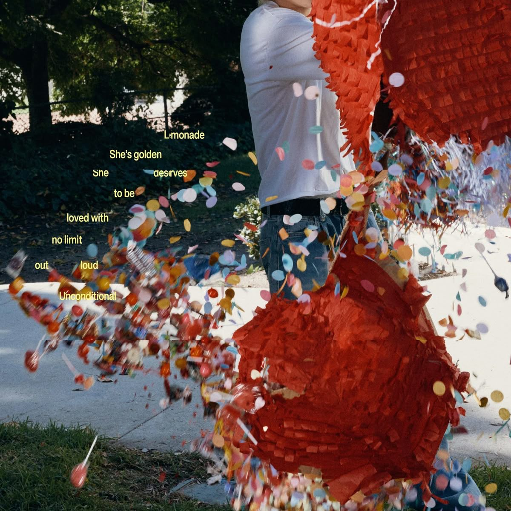
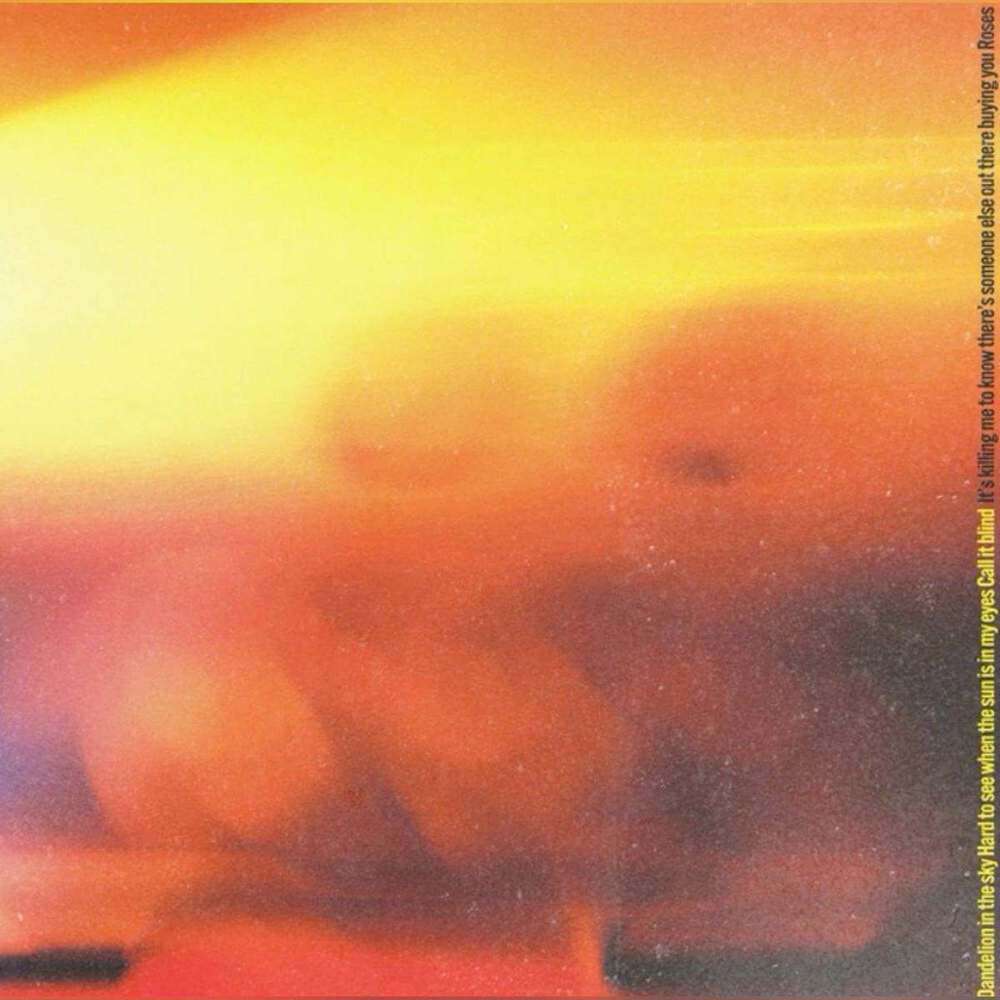

JEONG JAEHYUN
Jeong Yun-o (Hangul: 정윤오) yang biasa dikenal sebagai nama panggung Jeong jaehyun (Hangul:정재현), lahir pada 14 Februari 1997, Korea Selatan. Jaehyun seorang penyanyi, penulis lagu, dan aktor. Ia terkenal sebagai anggota grup unit NCT - Neo Culture Technology dan sub-unit lainnya seperti NCT U, NCT 127, Jaehyun telah aktif sejak 2013 disaat ia berumur 16 tahun sebelum debutnya (SMRookies). Awal debutnya dimulai pada april 2016 sebagai anggota NCT U dan mulai berputar menjadi anggota NCT 127. NCT memang dikenal sebagai grup yang berisikan banyak anggota dan unit. Jaehyun memang berlatar belakang pendidikan di sekolah seni yaitu School of Performing Arts Seoul. FYI Jaehyun pernah tinggal di Connecticut AS saat berumur 5-10 tahun, y'all know. Hal inilah membuat dia fasih berbahasa inggris.
LAGU SOLO JAEHYUN
      Cowok berlesung pipit ini tampil menawan lewat perilisan lagu-lagu solonya sejak 2017. Rata-rata lagunya bergenre R&B yang sangat cocok buat kamu yang suka r&b. Berikut lagu solo seorang Jeong Jaehyun:
- Try Again duet d.ear - 2017
- Forever Only - 2022
- Horizon - 2023
- Roses - 12 Agustus 2024
- J - 26 Agustus 2024
- Unconditional - 24 Oktober 2024
FUNFACT ABOUT JAEHYUN

Jaehyun NCT dijuluki sebagai "Valentine's Boy" karena ia lahir pada 14 Februari hari valentine. Val's (Fan name Jaehyun) Indonesia menjuluki dia dengan nama lokal "Jamal" saat acara salah satu acara e-commerce. Jaehyun berbakat dalam dunia akting, debut aktingnya pada tahun 2022 dalam drama korea berjudul Dear M As Male Lead. Jaehyun memiliki hobi berolahraga dan memainkan piano, di acara idola ia pernah memenangkan medali perak di bidang olahraga atletik. Kini Jaehyun sedang menjalani wajib militer dan bertugas dikorps musik Angkatan Darat Korea Selatan.